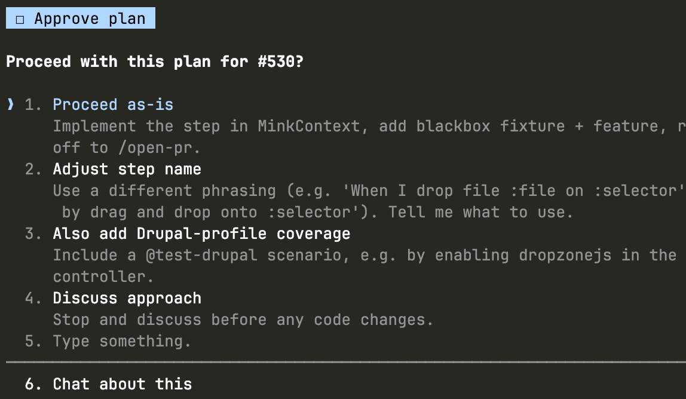
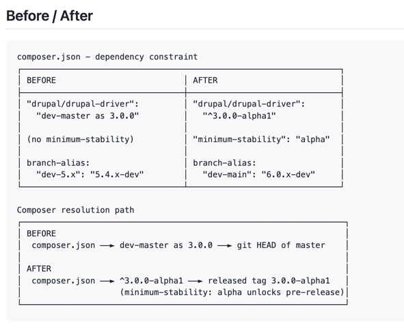
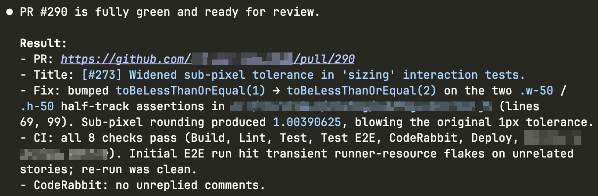
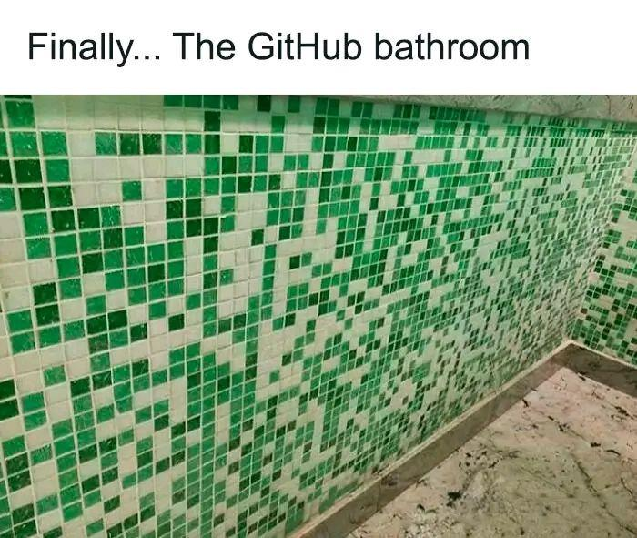

From Prompt to Pull Request
Human-led, AI-assisted Drupal feature work
Alex Skrypnyk

Where this talk comes from
I wanted to share what's working for me
Over the last year or so I've been figuring out how to ship features faster without the quality of what I deliver dropping, and this talk is the version of that I trust enough to take into real client work.
How we got here
Five years from copy-paste to autonomous
2021
Copilot. Autocomplete era
2022
ChatGPT. Copy-paste era
2023
Cursor. AI-native IDE
2024
Devin. First "autonomous"
2025
Claude Code. Real autonomous
2026
Autonomous is default
About the tool
Claude Code. But the discipline travels
It is what I use, and what the slides will show on screen. The workflow should still hold on Cursor, Copilot, Codex, Antigravity. The commands and ecosystem details will just look different.
Chart: The Pragmatic Engineer 2026 AI tooling survey (~1,000 responses)

Quiet helper · 1 of 4
Superwhisper
Speech to text for macOS
I dictate prompts instead of typing them, and voice produces a longer, more natural brief than typing ever does.
Runs a local AI model that makes speech recognition fast
superwhisper.com
Quiet helper · 2 of 4
superpowers
Gives the agent a set of skills it picks up before acting, plus the instructions to actually use them. It's the layer that turns "random prompts" into "consistent workflow".
github.com/obra/superpowers
Quiet helper · 3 of 4
claude-mem
Persistent memory across Claude sessions. Corrections stick, decisions get remembered, and I never re-explain the same thing twice.
Adds 50–100 tokens per session for the index lookup of previous conversations
github.com/thedotmack/claude-mem
Quiet helper · 4 of 4
agent-browser
Lets the agent drive a real headless browser
Navigates the site, fills forms, and screenshots what the editor actually sees, so the agent can verify its own visual changes.
Lets agents work in parallel, in the background.
github.com/vercel-labs/agent-browser
Design your workflow
Seven steps I run on every feature
- Prompt
- Plan
- Implement & test
- Review locally
- Open and review PR
- Manual review
- Merge
A workflow is a markdown file the agent reads when triggered. It defines a sequence of steps and pulls in other workflows or skills along the way.
Without one, every feature is twenty fresh prompts.
With one, I say "feature <issue URL>" and the agent runs the whole thing.
Workflow overview
From prompt to merge
"feature <issue URL>"
│
▼
/feature workflow
│
│ ┌─── TDD superpowers ───┐
▼ | |
Plan ─▶ | Implement ─▶ Test | ─▶ Review locally ─▶ Open and review PR ─▶ Human review ─▶ Merge
/plan skill | | /coderabbit:review /open-pr skill
└───────────────────────┘ |
▲ ▼
│ wait for CodeRabbit
| comments
│ │
│ ▼
└─────────── agent fixes or replies ───────── comment lands
Step 1 of 7
Prompt
I speak at the start of the workflow, and Superwhisper passes the transcript to the agent
Step 2 of 7
Plan
The agent runs a step-by-step wizard, asking follow-up questions as it goes. It drafts the spec for me to sign off, then presents the plan for approval.

Step 2 > Plan > Spec template
Spec template used by an agent
The plan session drafts this and clears the open questions
# spec-testimonial-cards.md
## Goal
One sentence. What does this deliver for the user or editor?
## Acceptance criteria
- Specific, testable, written as Behat givens if possible.
## In scope
- What the agent is allowed to build.
## Out of scope
- What the agent must not touch, even if it seems helpful.
## Dependencies
- Modules, config, other features this relies on.
## Open questions
- [ ] Unresolved decisions. Cleared before the ticket is cut.
## Review status
Draft | In review | Signed off
Step 3 of 7
Implement & Test
The workflow hands the plan and the spec to the agent, which implements them
Time to switch to another task or do some stretching/push-ups
# Prompt sent to the agent
Implement the feature described in feature-testimonial-cards.md.
Start with the Drupal config export for the paragraph type,
then the Twig template. Follow Vortex conventions - config
goes in config/optional, template in
web/themes/custom/<theme>/templates/paragraphs/.
Do not create a custom module. Check existing Barrio
paragraph templates for naming conventions before writing
anything.
Step 3 > Implement & Test > TDD red
TDD Superpowers
Test-Driven Development skill produces a failing test
Agent develops a test from the spec: the test itself is drafted, reviewed, and marked as "red" before any implementation runs.
# tests/behat/features/testimonial_cards.feature
Feature: Testimonial cards paragraph on the landing page
Scenario: Editor adds testimonial cards to a landing page
Given I am logged in as a user with the "content_editor" role
And I am editing a landing page
When I press "Add Testimonial Cards"
And I fill in "Title" with "Real stories"
And I fill in "Body" with "From the people we work with"
And I attach "portrait.jpg" to "Image"
And I press "Save"
Then I should be on the landing page
And I should see an "h3" element with text "Real stories"
And the "img" element should have an "alt" attribute
Step 3 > Implement & Test > Feature code
Produce feature code per spec
The agent writes the initial code from the spec
This is where other code writing skills and agreements are used
Step 3 > Implement & Test > Resolve issues
Visual confirmation
The agent uses the agent-browser skill to spawn multiple headless browsers
Agent goes to the problematic pages, validates that implementation works, and updates the code as needed
Agent iterates on the updated code until the red test passes
Screenshots are captured along the way to confirm visual issues are resolved
Behat asserts behaviour, while agent-browser asserts what people actually see on the screen.
# The agent's verification, after the test pass
agent-browser navigate \
https://local/node/add/landing_page
agent-browser fill "Title" "Real stories"
agent-browser click "Add Testimonial Cards"
agent-browser screenshot \
.artifacts/tmp/testimonial-cards-rendered.png
# Output:
# > .artifacts/tmp/testimonial-cards-rendered.png (saved)
# > h3 detected, alt attribute present
Step 3 > Implement & Test > TDD green
TDD tests marked as green
The agent marks the TDD step complete and moves on
Step 4 of 7
Review locally
The agent runs CodeRabbit CLI locally before opening a PR, and CodeRabbit also reviews the PR once it's open
It has enough coding and architectural knowledge to catch 80% of issues
Step 4 > Review locally > Review and re-test
Local review and remediation loop
The agent runs the workflow that runs the local review pass before opening a PR
Before the diff leaves my laptop, the agent runs /coderabbit:review locally and auto-remediates the Critical and Major findings.
The simplify skill catches reused-elsewhere drift and dead code.
Existing green tests run again
Step 5 of 7
Open & review PR
The agent opens the pull request with a dedicated skill
Step 5 > Open & review PR > PR format
Format for your PRs
A dedicated skill to format my PRs
Formats the subject and description
Provides architectural diagrams
Explains before/after in high-level terms

Step 5 > Open & review PR > Checks
Wait for PR checks
The agent waits for the checks to pass
Checks are CI jobs and other conditions configured to consider the PR as "ready to be merged"
CodeRabbit check will wait for the review
Step 5 > Open & review PR > Resolve
Resolve and iterate
The agent works through the review feedback
The agent assesses each review comment, either addressing it or bouncing it back with a reason
Resolution is considered complete only when every review comment has a reply
Step 5 > Open & review PR > Notify
Notify that PR is ready for a review
The agent reports back only when it's ready for review

Step 6 of 7
Manual review is what really matters
Automation got you here. Now it is time for human eyes
Read every line
Ask why, not just what. Agents will explain in detail
Push back on anything that seems off, no matter how small
Step 7 of 7
Merge
The PR closes when the loop has nothing left to say
Tracking the agent config
Track ~/.claude/ directory as a git repo
- Skills compound, so each one is a solved problem I never re-solve
- Memory persists, so corrections in one session carry into the next
- An auto-commit hook fires when the agent session ends, committing and pushing any change to
~/.claude/
#!/bin/sh
# ~/.claude/hooks/post-session.sh
# Auto-commit ~/.claude changes after every session.
cd "$HOME/.claude"
if git diff --quiet && git diff --staged --quiet; then
exit 0
fi
git add -A
git commit -m "Session update: skills, settings, memory."
git push
Artifacts
Everything the agent produces lives in the project
If it is not in the repo, it did not happen
my-drupal-project/
├── .artifacts/ # globally .gitignore'd
│ ├── tmp/ # agent scratch, gitignored
│ ├── reports/ # CI output, coverage
│ └── logs/
├── .claude/
│ ├── settings.json
│ ├── commands/
│ └── hooks/
│ └── pre-tool-use.sh # our &&-blocker
├── .github/
├── web/
└── vendor/
Permissions
One file. Zero interruptions
The agent asked to run git status 40 times before I wrote a single file. I fix this once.
// .claude/settings.json
{
"permissions": {
"allow": [
"Bash(composer:*)",
"Bash(drush:*)",
"Bash(ahoy:*)",
"Bash(git status)",
"Bash(git diff:*)",
"Bash(phpunit:*)",
"WebFetch(domain:drupal.org)"
]
}
}
Hooks
One pre-tool-use hook blocks chained bash before it happens
Unchecked, the agent chains shell commands together with &&, and one partial failure in the middle of a chain can leave the repo in a state nothing on the planet wants to be in.
Solve it once with a small hook and you never have to think about it again
#!/bin/sh
# .claude/hooks/pre-tool-use.sh
# Block chained bash commands.
cmd=$(cat | jq -r '.tool_input.command')
if echo "$cmd" | grep -qE '(&&|;|\$\()'; then
echo "One command per call. Split it." >&2
exit 2
fi
Custom rules
A plain script to encode rules
A small script in PHP (or any language). Codifies architectural rules that standard lint knows nothing about.
Runs in CI and as a pre-commit hook. Catches drift before the PR
#!/usr/bin/env php
// scripts/arch-rules.php
// Runs in CI, alongside lint + tests. Fails on violation.
$violations = [];
// Rule: no static service calls in custom code.
foreach (glob('web/modules/custom/**/*.php') as $file) {
if (preg_match('/\\\\Drupal::service\\(/', file_get_contents($file))) {
$violations[] = "$file: use constructor injection";
}
}
// Rule: Behat features live under tests/Behat/Features/.
if (is_dir('features')) {
$violations[] = 'features/ exists - move to tests/Behat/Features/';
}
// Rule: testimonial_cards twig templates need BEM root.
foreach (glob('web/themes/**/paragraph--testimonial-cards*.twig') as $f) {
if (!str_contains(file_get_contents($f), 'testimonial-card')) {
$violations[] = "$f: missing .testimonial-card BEM root";
}
}
if ($violations) {
fwrite(STDERR, implode("\n", $violations) . "\n");
exit(1);
}
On writing skills
I don't write skills. I ask the agent to
A skill is a markdown file the agent reads before acting. It encodes the constraints, conventions, and edge cases I have already solved, so every session after that inherits the answer.
The skills that matter encode your team's decisions and your project's conventions. So the most useful thing I can share is
superpowers:writing-skills, the skill the agent uses to write new skills. I describe the pattern, it drafts the file, the next session picks it up.
Working in parallel
For Drupal, I clone the project, not git worktree it
Worktrees give you a checkout without an environment around it, which is fine on a static codebase. A Drupal feature usually depends on a running database, an imported config, an installed site, and without that I cannot really review what the agent is building.
So for each branch I clone the project into its own directory, with its own database and its own running site, and the agent works against a real environment.
Old school, on purpose. Full control at every stage
What's next
Cloud agents are still the next iteration for me
The idea of running an agent somewhere in the cloud rather than on my laptop, end-to-end, with its own environment that I do not have to keep open in front of me, is where this workflow is going next. I just have not got to implementing it yet.
So the next iteration is to reuse the same feature workflow and the same skills, but in the cloud, so an agent can take a Drupal feature end-to-end without me holding the laptop open.
What this costs
The context switching
Several agents running. My whole day turns into review mode. Holding multiple unfinished diffs in my head is genuinely heavy.
I cap concurrent agents at two or three, batch review into fixed windows, and stop reacting to every notification
What this costs
The fear of drift
Even with the rules in place, drift shows up in the pull request. I wait for the agent to finish, the PR lands, the diff has wandered from what I wanted. Some context I never said out loud, and the rework eats the time the run was meant to save.
It's not that different from briefing a human badly: I add the missing context and run it again
What this costs
The fear of running out
A meter ticking at the back of my head. How much have I used. Is there enough left for this session. If not, what gets prioritised, what gets cut, what waits until the window resets.
I scope each session to one task, hand over between sessions with claude-mem, compact instead of re-explaining, and delete stale artefacts as I go
Act 4
What I leave you with
Take home
AI is a force multiplier
It does not remove engineering. It removes the friction around engineering.
You are still the engineer
What I still own
Writing the code is no longer the hard part. Knowing what to write is.
The decisions do not go away when an agent joins the work, they concentrate, and the agent cannot pull them out of thin air because it does not have the context the decisions depend on.
Context is the input and judgement is the output, so gathering the context is the engineering work that did not get easier
Working around no-AI policies
When AI is blocked on the client repo: contribute around it
- Build the feature as an open-source contrib module
- A small hand-written glue module installs it in the client repo
- Community gets a reusable module. Policy stays honest
drupal_extension_scaffold scaffolds the contrib module in minutes

Take this with you
drevops/vortex
- Drupal project template for every consumer Drupal site
- CI, config, environment parity, ready to go
- The guardrail tooling that makes the workflow we covered possible
github.com/drevops/vortex

Personally
AI lets me build the ideas I would never have had time for

Thank you
Alex Skrypnyk
DrevOps · DrupalSouth Wellington 2026